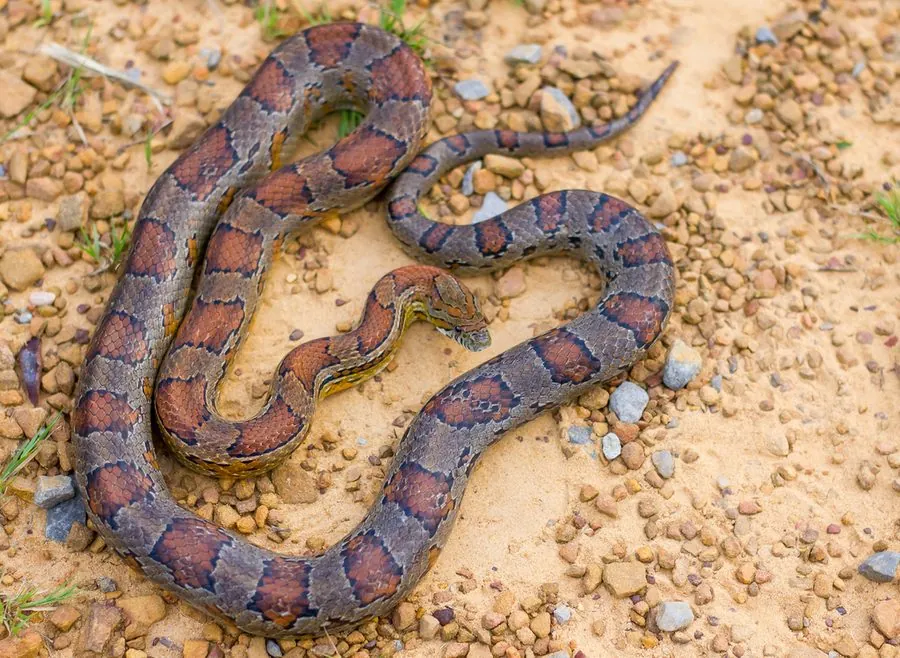

爬行动物 · 动物界
玉米蛇 Pantherophis guttatus

原产北美的温顺游蛇，身上红橙色斑块形似玉米粒，性格温和、易于饲养，是最受欢迎的宠物蛇之一。
- 分类
- 门脊索动物门纲爬行纲目有鳞目科游蛇科属玉米蛇属
- 栖息环境
- 北美东南部的松林、灌丛、农田与废弃建筑附近
- 地理分布
- 美国东南部及墨西哥湾沿岸地区
- 保护级别
- IUCN 无危（LC）；非中国原产，在中国无保护级别
物种志
玉米蛇体长 0.8–1.5 米，身体细长，头颈分界明显，体色因品系不同而变化很大，典型个体为橙红底色配深红色鞍状斑块，斑块边缘常镶黑边，腹部有黑白相间的棋盘格纹；鳞片光滑，眼睛较大。
它原产于美国东南部和墨西哥湾沿岸的松林、灌丛与农田边缘，多在夜间和晨昏活动，捕食鼠类、蜥蜴和蛙类，靠缠绕使猎物窒息后整只吞下。每年 3–5 月繁殖，雌蛇产卵 10–30 枚，埋在腐木或松土中，孵化期约 55–75 天，幼蛇出壳后独立生活。由于性格温顺、色彩品系丰富，玉米蛇成为最受欢迎的宠物蛇之一，人工繁殖技术成熟；在中国它属于外来物种，饲养者不可随意放生。
形态与习性
- 食性鼠类、蜥蜴和蛙类
- 体长0.8–1.5 m
- 体重约 300–500 g
- 寿命约 15–20 年
- 繁殖卵生，每窝 10–30 枚，孵化 55–75 天
- 活动节律夜行性，晨昏也活动
- 特点性情温顺，人工选育品系繁多
趣味知识
- 玉米蛇的名字据说来自它常在玉米仓附近捕鼠，身上的斑块也像玉米粒。
- 它没有毒牙，捕猎时靠身体缠绕使猎物窒息。
- 人工选育的玉米蛇已有数百个色型，是宠物蛇市场的常见物种。